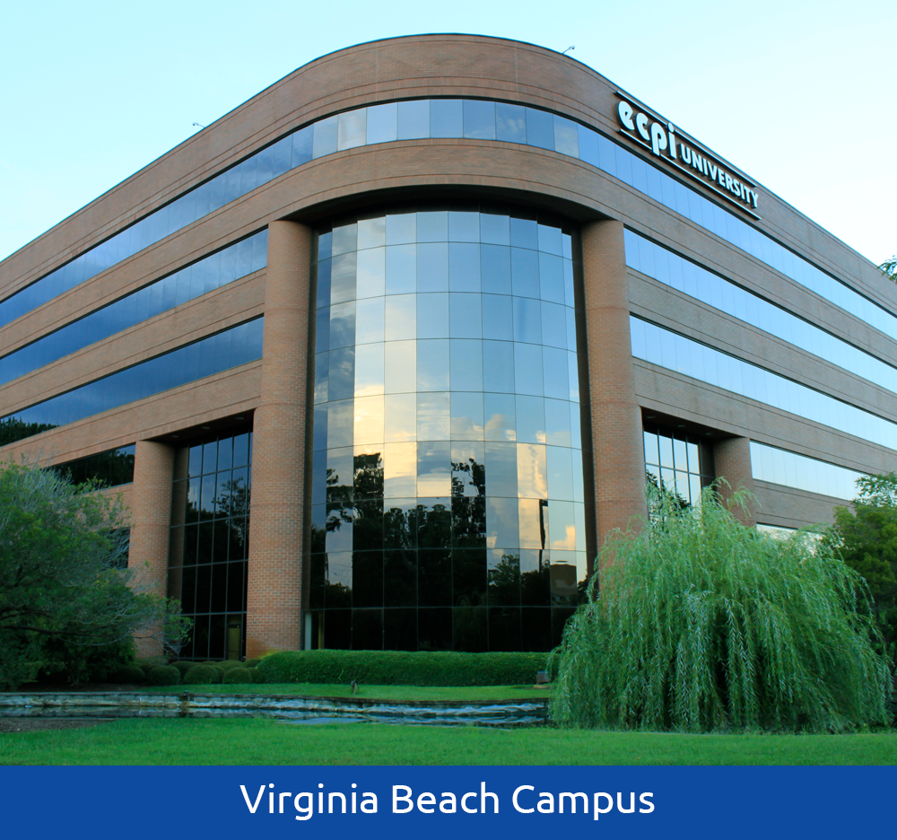

About me
Place of Birth:
I am originally from Sierra Leone, West Africa.

Places lived:
I moved to London UK between the age of 5-6. Then I moved to US, specifically Viriginia at the age of 12.
I am originally from Sierra Leone, West Africa.
I moved to London UK between the age of 5-6. Then I moved to US, specifically Viriginia at the age of 12.
I've been living in Northern Virginia since moving here from the UK

The high school I attended was LakeBraddock Secondary School. Located in Burke Virginia. It was a school that combined both middle and highschool therefore I was there from 7th grade all the way to 12th grade.
The college I attended was ECPI University. ECPI stands for East Coast Polytechnical Institute. Head quarter is in Virginia Beach. I attended at the Manassas campus between Jun of 2021 to March of 2024. I majored in Computer Information Science Software Development.
